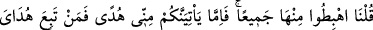

yolunda sermâyesini kaybedeceğini anladı. Çâresizlik içinde “Ey Rabbimiz!” diyerek
O’ndan yardım istedi. Âdem’in cennetten uzaklaştırılmasındaki hikmet budur. Allah
Teâlâ darda kalanın duâsına hemen icâbet eder. Hz. Âdem’in de çâresizlik içinde ettiği
bu duâyı Allah kabûl etmiş, onu rahmetine daldırmıştır. Hz. Âdem, Allah’dan aldığı
kelimelerden “ictibâ”; yâni tasfiye ağacını yeşertti. Bu ağacın dallarında tevbe çiçeği
açtı. Tevbe çiçeklerinden de hidâyet ve mârifet meyvası hâsıl oldu. Nitekim Allah
Teâlâ: “Sonra Rabbin onu seçkin kıldı, tevbesini kabûl etti ve doğru yola yöneltti”
(Tâhâ, 20/122) buyurmaktadır. İnsanın aklına: “Âdem’in tevbesi kabûl olunduktan sonra
ne oldu?” gibi bir soru gelebilir. Bunun cevâbını Allah Teâlâ veriyor:
38. Dedik ki: Hepiniz cennetten inin! Eğer benden size bir hidâyet gelir de her
kim hidâyetime tâbi olursa onlar için herhangi bir korku yoktur ve onlar üzüntü
çekmezler.
Burada emrin çoğul olması ve “cemîan” (toptan) tâbirinin kullanılması te’kid ifâde
eder ve Âdem, Havvâ, İblîs, tâvus ve yılandan oluşan bir topluluğun cennetten
indirildiğine işâret eder. “İnin” emrinin ikinci kez tekrarlanması, emrin
kesinliğindendir. Ya da tevbesinin kabûlünden sonra Âdem’in yeryüzüne indirilmeyi
arzu etmesini önlemek içindir. Ayrıca birinci ve ikinci “inin” emri, farklı mânâlar ifâde
etmektedir. Birincisi: “Ebedî olmayan, kavga ve mücâdelelerle dolu olan bir dünyâya
imtihan için inin” mânâsına gelirken ikincisi “emir ve yasaklardan sorumlu olmak için
dünyâya inin” mânâsına işâret etmektedir. Eğer “inin” emirlerinin arasına “Âdem’in
tevbesinin kabûlü ve Rabbinden kelimeler alması” konusu girmeseydi yukarıdaki iki
mânâ tek bir “inin” emriyle ifâde edilebilirdi. Aralarına farklı bir cümle girdiği için
Allah Teâlâ: “
” emrini tekrâr etti ve bununla; ibâdetlerle imtihan edileceğiniz,
itâatiniz karşılığında sevâb, isyânınız karşılığında günah kazanacağınız dünyâya inin
mânâsını kasdetti.
el-İrşâd adlı kitapta şöyle denmiştir. İkinci “
” emrinin asıl amacı insanları
kurtuluşa götüren hidâyetin verileceğini bildirmektir.
Âyet, Allah’a isyânına, insanı içinde bulunduğu nimetlerden mahrûm bırakacağına
işâret eder. Allah Teâlâ bir günahı yüzünden Âdem’i cennetten çıkarmıştır. Nitekim bir
şâir şöyle söylemiştir:
Bir iş tamam olunca noksanlığı yaklaşır;
“Tam oldu” denilince de zevâle erişir.
Eğer nimet içinde isen onu muhâfaza et,